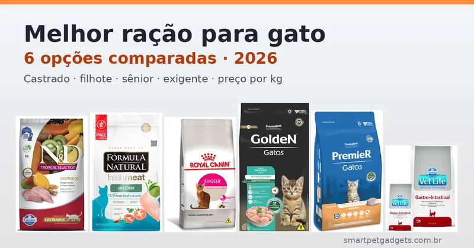
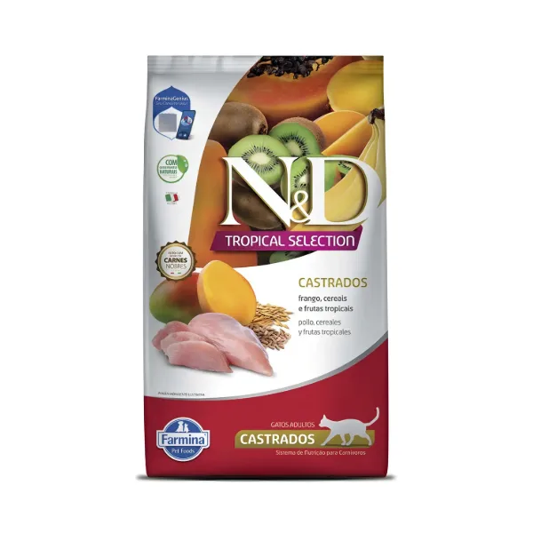
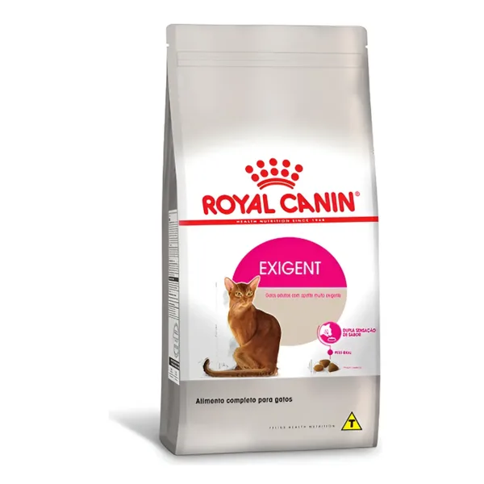
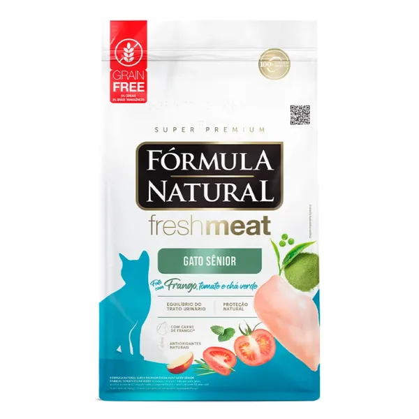
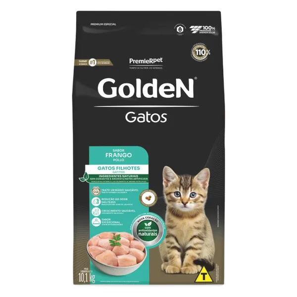
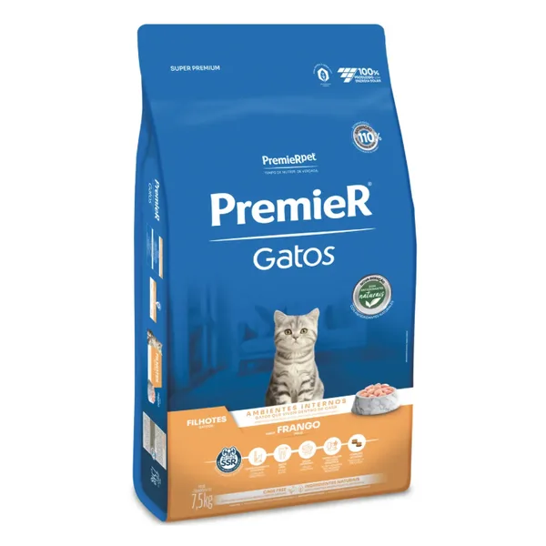
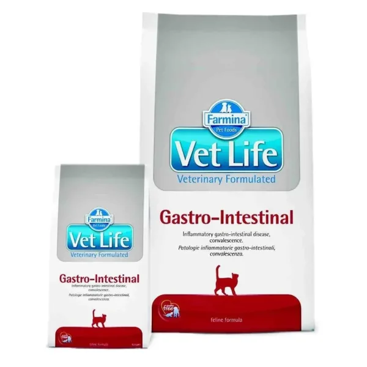

Qual é a melhor ração para gato? Depende da fase e da saúde do gato. Para o gato adulto castrado, que é o caso da maioria dos gatos de apartamento, a N&D Tropical Selection Castrados é a mais completa desta lista, com nota 4,9 em mais de 2.400 avaliações. Para filhotes, a GoldeN Gatos Filhotes tem o menor preço por kg (cerca de R$ 17,50). Comparamos 6 rações vendidas no Mercado Livre, para castrado, exigente, sênior, filhote e problema intestinal, pela composição e pelo preço por quilo.
Quer ir direto aos produtos? Veja a tabela com preço por kg e o link de cada ração.
Ver as rações recomendadas ↓Resposta direta: qual escolher
- Gato adulto castrado: N&D Tropical Selection Castrados. Usa grãos ancestrais de baixo índice glicêmico (espelta e aveia), que ajudam na saciedade, a cerca de R$ 40/kg.
- Gato enjoado (paladar exigente): Royal Canin Exigent. Mistura dois tipos de croquete com formas e texturas diferentes, a cerca de R$ 30/kg.
- Gato idoso (7 anos ou mais): Fórmula Natural Fresh Meat Sênior 7+. Tem 34% de proteína, é grain free e traz glicosamina e condroitina, a cerca de R$ 35/kg.
- Filhote com orçamento menor: GoldeN Gatos Filhotes, cerca de R$ 17,50/kg, com DHA e taurina.
- Filhote que vive dentro de casa: PremieR Gatos Filhotes, super premium da linha "ambientes internos", cerca de R$ 22,40/kg.
- Diarreia, vômito ou recuperação: Vet Life Gastro-Intestinal. É dieta veterinária e só deve ser usada com orientação do veterinário.
| Ração | Categoria | Fase / indicação | Destaque | Pacote | Preço | R$/kg | Nota ML |
|---|---|---|---|---|---|---|---|
| N&D Tropical Castrados | Super premium | Adulto castrado | Grãos ancestrais, frutas tropicais | 7 kg | R$ 279,99 | ~40,00 | 4,9★ (2.406) |
| Royal Canin Exigent | Super premium | Adulto exigente (1 ano+) | 2 croquetes, saúde urinária | 10,1 kg | R$ 302,99 | ~30,00 | 4,9★ (720) |
| Fórmula Natural Fresh Meat Sênior 7+ | Super premium, grain free | Sênior (7 anos+) | 34% proteína, 16% carnes | 10,1 kg | R$ 352,00 | ~34,85 | 4,9★ (453) |
| GoldeN Gatos Filhotes | Premium especial | Filhote | DHA, taurina, pH urinário | 10,1 kg | R$ 176,93 | ~17,52 | 4,9★ (1.583) |
| PremieR Gatos Filhotes | Super premium | Filhote de apartamento | DHA, taurina, prebióticos | 7,5 kg | R$ 168,00 | ~22,40 | 5,0★ (89) |
| Vet Life Gastro-Intestinal | Dieta veterinária | Adulto com indicação | Alta digestibilidade, convalescença | 2 kg | R$ 150,25 | ~75,13 | 4,9★ (2.938) |
Preços, notas e número de avaliações consultados no Mercado Livre em 08/11/2026, em plena temporada de Black Friday, e sujeitos a alteração. Confira o valor atual na página do produto antes de comprar.
Os pacotes vão de 2 kg a 10,1 kg, então o preço do saco não serve para comparar. Por quilo, a diferença entre a ração de filhote mais barata e a mais cara de manutenção passa de 2 vezes:
*Dieta veterinária em pacote de 2 kg. Não compare diretamente com rações de manutenção.
Nesta página

Ração italiana para gatos castrados com frango, grãos ancestrais de baixo índice glicêmico (espelta e aveia) e frutas tropicais ricas em antioxidantes naturais. Os grãos de baixo índice glicêmico liberam energia mais devagar e aumentam a saciedade, o que ajuda a controlar o apetite, problema comum depois da castração. A descrição também cita proteção da saúde bucal.
No resumo das avaliações, os tutores destacam a ótima aceitação, melhora no pelo e na digestão, recomendação de veterinários e embalagem bem vedada.
R$ 279,99 (há oferta de R$ 248,58 no Pix com outro vendedor) · ⭐ 4,9 · 2.406 avaliações · +10 mil vendidos

Ração para gatos adultos (a partir de 1 ano) com apetite muito exigente. O diferencial é a dupla sensação de sabor: dois tipos de croquete com formas, composições e texturas diferentes, pensados para gatos que enjoam rápido. Tem conteúdo energético ajustado para manter o peso ideal, cuidado com o trato urinário e com a saúde bucal. Também existe em pacote de 4 kg.
Ponto de atenção: a composição usa farinha de vísceras de aves como primeiro ingrediente, seguida de quirera de arroz, milho, glúten de trigo e proteína de soja, com o antioxidante BHA. Funciona bem para aceitação, mas não é a fórmula mais "natural" da lista.
R$ 302,99 (39% off) · ⭐ 4,9 · 720 avaliações · +1.000 vendidos

Super premium grain free para gatos com mais de 7 anos. Tem 34% de proteína bruta, o que ajuda a preservar a massa muscular, que diminui com a idade. Leva carnes selecionadas (mín. 16%) de frango e fígado, mandioca e ervilha no lugar dos cereais, glicosamina, condroitina e colágeno para as articulações, prebióticos, ômega 3 de algas e antioxidantes naturais (chá verde, alecrim e tocoferóis). A embalagem destaca equilíbrio do trato urinário e saúde bucal.
Compradores relatam que o pacote grande vem em vários sacos lacrados de 505 g, o que mantém a ração fresca por mais tempo.
R$ 352,00 (7x sem juros) · ⭐ 4,9 · 453 avaliações · +1.000 vendidos

Ração premium especial para gatinhos, com farinha de vísceras de frango como ingrediente principal, DHA e taurina para o crescimento e o desenvolvimento, controle do pH urinário e ingredientes que ajudam a reduzir o odor das fezes. A embalagem informa ingredientes naturais, sem corantes e sem aromatizantes artificiais, com antioxidantes naturais. É a ração com o menor preço por quilo desta comparação.
No resumo das avaliações, os tutores destacam o sabor, a textura sequinha e crocante com pedaços pequenos, fáceis para filhotes, e o custo-benefício.
R$ 176,93 (36% off) · ⭐ 4,9 · 1.583 avaliações · +5 mil vendidos

A versão super premium da mesma fabricante da GoldeN, da linha ambientes internos, feita para gatos que vivem dentro de casa. É rica em proteína animal de alto valor biológico, com DHA e taurina, fibras e prebióticos para o equilíbrio intestinal e nutrientes para pele, pelagem e unhas. A descrição também cita ajuda na remoção do tártaro.
No resumo das avaliações, os tutores destacam a melhora visível no pelo, a boa aceitação e a digestão. Um comprador sugere fecho zip no pacote grande, como no de 1,5 kg.
R$ 168,00 · ⭐ 5,0 · 89 avaliações · +1.000 vendidos

Alimento da linha Veterinary Formulated para gatos adultos com diarreia aguda ou crônica, vômitos, má digestão ou em convalescença. Tem alta digestibilidade e um nível de gordura mais alto, para fornecer energia a gatos que precisam se recuperar rápido. É uma dieta de suporte clínico, não uma ração de manutenção.
No resumo das avaliações, os tutores citam excelente aceitação e indicação frequente por veterinários. Há relatos de gatos que pararam de vomitar após a troca, sempre com acompanhamento.
R$ 150,25 · ⭐ 4,9 · 2.938 avaliações · +10 mil vendidos
Preços, notas e avaliações consultados no Mercado Livre em 08/11/2026 e podem variar. As informações de composição vêm da descrição oficial de cada anúncio e da embalagem.
⚠️ Vet Life Gastro-Intestinal não é para qualquer gato: vômito frequente e diarreia em gato podem ter várias causas, de bola de pelo a doença inflamatória intestinal. Uma dieta gastrointestinal ajuda no tratamento, mas não substitui o diagnóstico. Se o seu gato vomita mais de uma vez por semana, tem diarreia por mais de 2 dias ou parou de comer, leve ao veterinário antes de trocar a ração.
N&D Castrados — Prós
N&D Castrados — Contras
Royal Canin Exigent — Prós
Royal Canin Exigent — Contras
Fresh Meat Sênior — Prós
Fresh Meat Sênior — Contras
GoldeN Filhotes — Prós
GoldeN Filhotes — Contras
PremieR Filhotes — Prós
PremieR Filhotes — Contras
Vet Life GI — Prós
Vet Life GI — Contras
Depois da castração, o gato gasta menos energia e costuma ficar com mais fome. Sem ajuste na dieta, ganhar peso é questão de meses. Por isso, a ração para castrados costuma ter:
Na lista, a N&D Tropical Castrados é a única específica para castrados. A Royal Canin Exigent também tem energia ajustada para o peso ideal e é uma alternativa para castrados enjoados. Se o seu gato já está acima do peso, veja também como o comedouro automático ajuda no controle de peso do gato.
| Fase | Idade aproximada | O que a ração precisa ter | Opções desta lista |
|---|---|---|---|
| Filhote | Até cerca de 12 meses | Mais energia, proteína, DHA (cérebro e visão) e taurina; croquete pequeno | GoldeN Filhotes, PremieR Filhotes |
| Adulto / castrado | 1 a 7 anos | Controle de peso e saúde urinária | N&D Castrados, Royal Canin Exigent |
| Sênior | A partir de 7 anos | Proteína de alta qualidade, suporte às articulações, antioxidantes | Fresh Meat Sênior 7+ |
Dar ração de filhote para gato adulto por muito tempo fornece energia e minerais em excesso. O contrário, ração de adulto para filhote, pode deixar faltar nutrientes no crescimento. A troca de fase deve ser gradual e, se o gato tiver alguma doença (renal, por exemplo, comum em idosos), quem define a ração é o veterinário.
Gatos bebem pouca água por natureza, e a ração seca tem só cerca de 10% de umidade. Somando os dois, a urina fica mais concentrada, o que favorece cristais e cálculos. Três hábitos simples ajudam:
Gatos estranham mudanças bruscas. Faça a transição em 7 a 10 dias:
| Dias | Ração antiga | Ração nova |
|---|---|---|
| 1 a 3 | 75% | 25% |
| 4 a 6 | 50% | 50% |
| 7 a 9 | 25% | 75% |
| 10 em diante | 0% | 100% |
Se o gato separar os grãos e comer só a ração antiga, vá mais devagar. Para manter as porções exatas durante a troca, um alimentador automático para gatos ajuda bastante, e se você tem mais de um gato, veja como evitar que um coma a ração do outro.
Entre as seis comparadas, a N&D Tropical Selection Castrados é a única específica para castrados. Ela usa grãos ancestrais de baixo índice glicêmico (espelta e aveia), que ajudam na saciedade, e tem nota 4,9 em mais de 2.400 avaliações no Mercado Livre. Para castrados com paladar exigente, a Royal Canin Exigent também tem energia ajustada para manter o peso ideal.
Para quem quer economizar, a GoldeN Gatos Filhotes custa cerca de R$ 17,50 por kg e traz DHA, taurina e controle do pH urinário, sem corantes. Para quem prefere uma super premium, a PremieR Gatos Filhotes Ambientes Internos sai por cerca de R$ 22,40 por kg. As duas são da PremieRpet e têm croquetes pequenos, fáceis para filhotes.
Em geral até cerca de 12 meses, quando o gato atinge o tamanho adulto. Gatos castrados cedo podem precisar trocar antes, porque a castração reduz o gasto de energia. Siga a idade indicada na embalagem, confirme com o veterinário e faça a troca para a ração de adulto de forma gradual, em 7 a 10 dias.
A maioria das marcas indica ração sênior a partir dos 7 anos, como a Fórmula Natural Fresh Meat Gato Sênior 7+. Nessa fase, a ração deve ter proteína de alta qualidade para preservar os músculos, suporte às articulações e antioxidantes. Gatos idosos com doença renal ou outra condição precisam de dieta definida pelo veterinário.
Experimente uma ração com croquetes variados, como a Royal Canin Exigent, ou com carne fresca, como a Fresh Meat. Mantenha a ração sempre fresca, em pote hermético, e use um pote raso e limpo. Nunca deixe o gato em jejum para forçar a aceitação: gato sem comer por dias corre risco de lipidose hepática. Se ele recusar tudo por mais de 24 horas, procure o veterinário.
A classificação é feita pela própria indústria e não segue uma norma oficial. Em geral, as super premium usam mais proteína de origem animal, ingredientes de maior digestibilidade e menos aditivos artificiais, o que costuma resultar em fezes menores e com menos odor. A GoldeN (premium especial) e a PremieR (super premium), da mesma fabricante, mostram bem essa diferença de categoria e de preço.
Rações veterinárias como a Vet Life Gastro-Intestinal são vendidas livremente, mas são dietas de suporte clínico, indicadas para diarreia, vômito, má digestão ou recuperação. O ideal é usar com orientação do veterinário, que vai investigar a causa do problema e definir por quanto tempo manter a dieta.
A ração seca não causa o problema sozinha, mas tem só cerca de 10% de umidade, e gatos bebem pouca água por natureza. Isso deixa a urina mais concentrada e favorece cristais e cálculos, principalmente em machos castrados. Ofereça água fresca em vários pontos da casa, considere uma fonte (bebedouro automático) e, se o veterinário indicar, complemente com sachê ou ração úmida.
A melhor ração para gato é a certa para a fase e a saúde dele. Para o gato adulto castrado, a N&D Tropical Castrados é a escolha mais completa desta lista. Gatos enjoados costumam aceitar melhor a Royal Canin Exigent, e os idosos ficam bem servidos com a Fresh Meat Sênior 7+. Para filhotes, a GoldeN ganha no preço e a PremieR é a opção super premium para quem cria o gato dentro de casa. A Vet Life Gastro-Intestinal fica para quando o veterinário indicar. Seja qual for a escolha, faça a troca devagar e mantenha água fresca sempre disponível.
Informações de composição e indicação consultadas nas descrições oficiais dos anúncios e nas embalagens (Farmina/N&D e Vet Life, Royal Canin, Fórmula Natural e PremieRpet/GoldeN e PremieR). Este conteúdo não substitui orientação veterinária. Veja nossa política editorial.
🐾 Confira preços e disponibilidade atual no Mercado Livre.
Links de afiliado: podemos receber uma comissão por compras feitas através destes links, sem custo adicional para você.
Nildo Alves — curadoria de produtos pet no Smart Pet Gadgets. Pesquisa e compara produtos para cães e gatos, cruzando especificações de fabricante com boas práticas veterinárias e dados de mercado.
Sobre o Smart Pet Gadgets · Contato · Política editorial e de afiliados